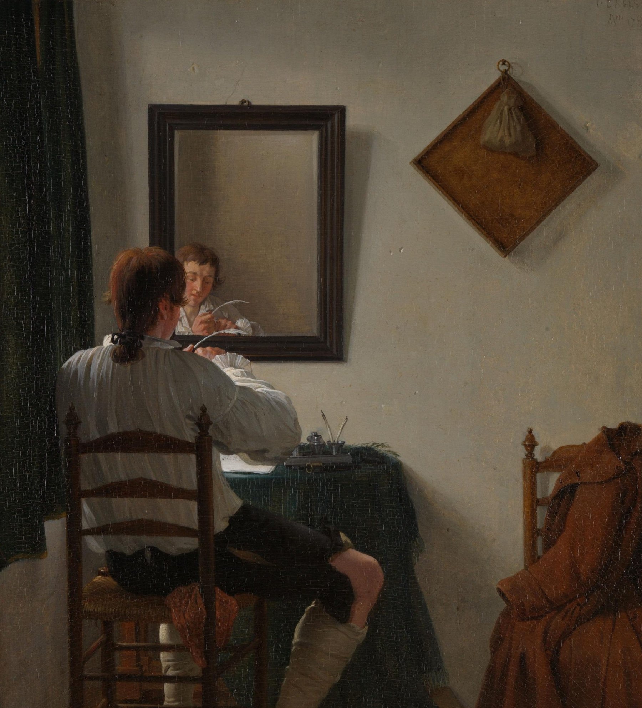
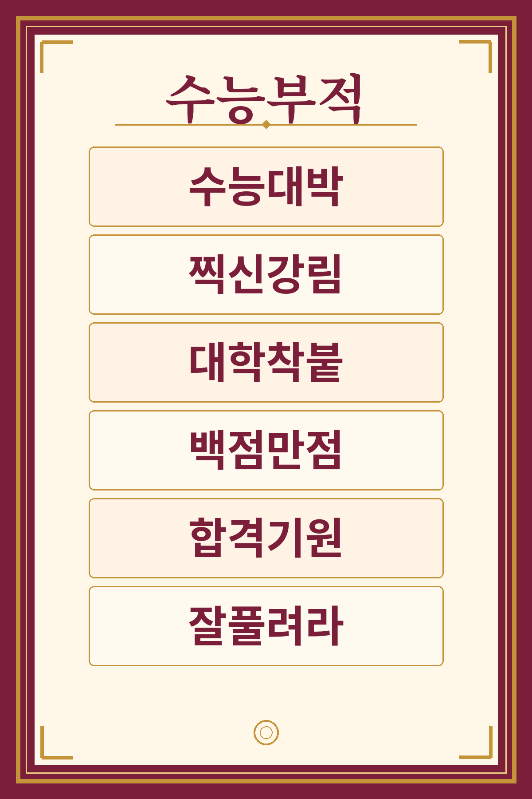

Français · Seconde professionnelle · Seconde générale et technologique
Sans JavaScript, toutes les étapes restent visibles à la suite.
0-2 minRituel d'entrée
On commence ensemble
Une séance de 52 minutes, pour le tableau numérique. On apprend à lire un QCM, on s'entraîne, et personne n'est jugé.

Le professeur dit, tout de suite :
« Installez-vous, sortez de quoi écrire. Aujourd'hui, on se prépare au test de positionnement. Ce n'est pas une épreuve qui décide de votre avenir. On apprend à lire un QCM avec méthode. »
Regard rapide, 20 secondes. Que fait ce jeune homme ?
- Je vois un jeune homme qui…
- Il est en train de…
- Devant lui, il y a…
Deux ou trois réponses, puis on avance. Pas de débat long.
- 1 séance
- 52 minutes
- Pas de note au test
- Écrit, oral, langue
Transition, minute 2. « Ouvrez le livret. On regarde une amulette venue de Corée du Sud. » Puis onglet L'amulette.
2-7 min5 minutes
L'amulette
Le professeur dit : « Regardez cette planche. Que voyez-vous ? À quoi sert cet objet ? Le « dieu des réponses au hasard », est-ce une bonne méthode ? »

Observe
Formes, couleurs, écritures : que vois-tu ?
- Je vois…
- Il y a des…
Imagine
À quoi sert cet objet ?
- Ça sert à…
- On le porte pour…
수능대박Cartonne au suneung
찍신강림Que le dieu des réponses au hasard descende sur moi
대학착붙Admis à l'université
백점만점100 sur 100
합격기원Vœux de réussite
잘풀려라Que tout se passe bien
Vérification rapide. Le « dieu des réponses au hasard », est-ce une bonne méthode pour un QCM ?
Attendu, en une phrase : non. Mieux vaut éliminer les mauvaises réponses.
- Ce n'est pas une bonne méthode, parce que…
- Je préfère…
J'écris, une ou deux lignes. Ce que je retiens de cette amulette.
Transition, minute 7. « Chez nous, le test ne décide de rien. Voyons ce qu'il contient, en quatre minutes. » Onglet Le test en bref.
7-11 min4 minutes
Le test en bref
Le professeur dit : « Trois choses à retenir : pas de note, aucune orientation décidée, un outil pour mieux vous accompagner. On clique, on n'écrit pas. Les aides habituelles sont maintenues. »
- 50 minutes
- Sur ordinateur
- On clique, on n'écrit pas
- Pas de note
L'écrit
Un texte littéraire court, commun aux deux voies.
Puis un texte plus long, ou un groupement de documents.
L'oral
Un document sonore d'environ 2 minutes.
On peut le réécouter, même un seul passage.
La langue
Lexique, grammaire, orthographe.
Des questions communes, d'autres propres à chaque voie.
Le format. Des QCM à quatre propositions : une seule juste, trois pièges.
Le but. Repérer les acquis et les besoins de chacun, pour l'accompagnement.
Les aides. PAP, PPS, PPRE : les aides habituelles sont maintenues.
Vérification rapide, à main levée.
1. Ce test donne-t-il une note ? (Non.)
2. Peut-on réécouter un passage à l'oral ? (Oui.)
3. Combien de domaines ? (Trois : écrit, oral, langue.)
Transition, minute 11. « Maintenant, cinq règles, et un mot pour retenir chacune. » Onglet Cinq règles.
11-19 min8 minutes
Cinq règles pour un QCM
Le professeur dit : on lit chaque règle à voix haute. Exemple rapide avec « sauf » ou « une seule ». Puis chaque élève écrit un mot clé.
1
Je lis la consigne, deux fois.
Je repère le verbe (identifier, choisir, classer) et les petits mots qui changent tout : « ne… pas », « sauf », « une seule ».
2
Je lis la question avant le texte.
Je sais alors ce que je cherche.
3
J'élimine.
Trois propositions sont fausses : hors sujet, contraire au texte, ou trop loin. Je compare les deux dernières en revenant au texte.
4
Écrit ou suggéré ?
Certaines réponses sont dans le texte. D'autres se déduisent d'indices. Vrai dans la vie, mais absent du texte : piège.
5
Je gère mon temps et mon écoute.
Je ne reste pas bloqué. À l'oral : je lis les questions, j'écoute le sens général, puis je réécoute le passage utile.
Un mot pour retenir. J'écris, à côté de chaque numéro, le mot qui m'aide :
- 1. consigne
- 2. question
- 3. éliminer
- 4. indice
- 5. temps
Vérification rapide. Dans une consigne, que fait le mot « sauf » ?
Attendu : il inverse, ou il retire un cas. Il faut le lire deux fois.
Transition, minute 19. « On s'entraîne. Écrit, puis oral, puis langue. Si 40 minutes sonnent, on passe à la trace écrite, même si tout n'est pas fini. » Onglet Je m'entraîne.
19-40 min21 minutes
Je m'entraîne
Point d'arrêt, minute 40. Si l'entraînement n'est pas terminé, on passe tout de même à la trace écrite. Le reste devient un devoir.
A. Compréhension de l'écrit
Guy de Maupassant, « La Parure », 1884.
C'était une de ces jolies et charmantes filles, nées, comme par une erreur du destin, dans une famille d'employés. Elle n'avait pas de dot, pas d'espérances, aucun moyen d'être connue, comprise, aimée, épousée par un homme riche et distingué ; et elle se laissa marier avec un petit commis du ministère de l'instruction publique.
Elle fut simple ne pouvant être parée, mais malheureuse comme une déclassée ; car les femmes n'ont point de caste ni de race, leur beauté, leur grâce et leur charme leur servant de naissance et de famille.
dot : argent qu'une jeune femme apportait à son mari au moment du mariage.
Avant de répondre.
1. Je lis la consigne, deux fois.
2. Je lis les questions, puis le texte.
3. J'élimine les réponses qui ne conviennent pas.
A1 · Qui la jeune femme épouse-t-elle ?
A2 · « Elle se laissa marier » signifie :
A3 · « Comme par une erreur du destin » suggère que la jeune femme :
A4 · Dans le texte, « déclassée » désigne une personne :
A5. Coche une case par ligne.
| Affirmation | Vrai | Faux | Le texte ne le dit pas |
|---|---|---|---|
| Elle n'avait pas de dot. | |||
| Elle est heureuse dans son mariage. | |||
| Son mari est un homme méchant. |
Je me souviens. Vrai : le texte le dit. Faux : le texte dit le contraire. Le texte ne le dit pas : je n'invente rien.
Puis, minute 27 environ. « Livret ouvert aux questions d'oral. Vous lisez d'abord toutes les questions. Je lis ensuite le document, deux fois. » Sous-onglet L'oral.
B. Compréhension de l'oral
Le professeur lit le document (texte dans l'onglet Fiche prof, pas au tableau). Les élèves lisent d'abord les questions. Lecture deux fois, à voix posée. Relire un passage sur demande. En version adaptée : trois fois.
Avant la première écoute. Je lis toutes les questions.
Pendant l'écoute. Je note un mot ou une idée utile.
B1 · Ce document parle surtout :
B2 · Pendant l'épreuve d'écoute en anglais :
B3 · La visée principale du document :
B4 · Que pense le chroniqueur, sans le dire directement ?
Puis, minute 34 environ. « Dernier atelier : la langue, six minutes. Banque de mots ouverte. » Sous-onglet La langue.
C. Étude de la langue
Banque de mots. sujet · verbe · imparfait · participe passé · ces / ses · position · retenir son souffle
Grammaire
C1 · « Les candidats coréens passent le suneung en novembre. » Le sujet du verbe est :
C2 · « Elle souffrait sans cesse. » Le verbe est conjugué :
Orthographe
C3 · « Elle a ______ son test. »
C4 · « Chaque élève range ______ affaires. »
Lexique
C5 · « Positionnement » est formé à partir du nom :
C6 · « Tout le pays retient son souffle » signifie que le pays :
J'écris. Je justifie ma réponse à C3 ou à C4 :
- J'ai choisi… parce que…
- Avec avoir, je…
- Ses, c'est… / Ces, c'est…
Transition, minute 40. « On s'arrête. Deux phrases sur votre méthode, puis la grille : elle compte. » Onglet Trace et sortie.
40-52 minTrace 7 min · Sortie 5 min
Trace écrite et sortie
Le professeur dit : « En deux phrases, écris ce que tu feras le jour du test. Puis relis-toi avec la grille : elle compte dans la note. »
Le test de positionnement de français
Trois domaines : compréhension de l'écrit, compréhension de l'oral, étude de la langue.
Sur ordinateur, en 50 minutes. On clique, on n'écrit pas.
Pas de note : il sert à savoir où j'en suis, pour être mieux accompagné.
Ma méthode pour un QCM
1. Je lis la consigne, deux fois.
2. Je lis la question avant le texte.
3. J'élimine les réponses fausses.
4. Je distingue l'écrit et le suggéré.
5. Je ne reste pas bloqué ; à l'oral, je réécoute le passage utile.
J'écris, en deux phrases. Ce que je ferai le jour du test.
Prénom : _______________________________
- Le jour du test, je…
- D'abord je… Ensuite je…
- Si je bloque, je…
Banque de mots. le jour du test · je lis la consigne · je lis la question · j'élimine · je reviens au texte · je ne reste pas bloqué · je réécoute le passage utile
Ma grille d'auto-révision (elle compte dans la note, sur 4)
Je coche seulement ce que j'ai vraiment vérifié. Les points travaillés peuvent être repris ensuite dans le parcours Projet Voltaire de la classe.
Sortie de secours, à partir de la minute 44. Faire recopier ou relire la fiche « Ma méthode pour un QCM ». Faire cocher la météo en deux minutes. Le reste passe en devoir.
Ma météo avant le test (en privé)
Le professeur dit, minutes 47-52 : « Ce billet est pour moi seulement. Il n'est ni noté, ni lu à voix haute. Pliez-le et donnez-le-moi en sortant. »
Prénom (si je le souhaite) : _______________________________
Aujourd'hui, je me sens :
Ce qui m'aiderait :
Je plie ce billet et je le remets au professeur. Il n'est ni noté, ni lu à voix haute, ni montré à la classe.
Clôture, en rangeant. « Le jour J, lisez bien, éliminez, et avancez. À bientôt. »
Si l'inquiétude monte, on peut la nommer (spirale de Gorse) : elle s'emballe si on la laisse tourner. On la ramène à un geste concret : lire la consigne, éliminer, avancer.
Fiche professeur
Français, Seconde professionnelle et Seconde générale et technologique. 52 minutes, prête à l'emploi, y compris pour un contractuel. Ces classes demandent un rythme serré, dès la première minute : pas de temps mort, des transitions dites à voix haute, des vérifications rapides.
Pourquoi ces sources ? Le test est défini par le ministère. Pour préparer les élèves sans les tromper sur le format, on s'appuie sur les documents officiels, puis on les met en pratique en classe.
Documents d'Eduscol et du ministère : format (50 minutes, QCM, trois domaines, pas de note) et rôle (accompagnement, pas d'orientation).
Extrait de Maupassant, « La Parure » (1884), domaine public : un texte court, dans l'esprit de l'écrit du test.
Document oral rédigé pour la séance, sur le suneung : il entraîne l'écoute et relie l'amulette au test de la classe.
Déroulement, minute par minute
| Minutes | Étape | Ce que dit et fait le professeur |
|---|---|---|
| 0-2 | Rituel d'entrée | « Installez-vous, sortez de quoi écrire. Aujourd'hui, on se prépare au test de positionnement. Ce n'est pas une épreuve qui décide de votre avenir. On apprend à lire un QCM avec méthode. » Objectif au tableau. Distribuer le livret. Regard rapide sur le tableau d'Ekels, 20 secondes, puis on avance. |
| 2-7 | L'amulette | « Regardez cette planche. Que voyez-vous ? À quoi sert cet objet ? Le « dieu des réponses au hasard », est-ce une bonne méthode ? » Laisser écrire, puis quelques réponses orales. Attendu : non. Mieux vaut éliminer. |
| 7-11 | Le test en bref | « Trois choses à retenir : pas de note, aucune orientation décidée, un outil pour mieux vous accompagner. On clique, on n'écrit pas. Les aides habituelles sont maintenues. » Trois questions à main levée. |
| 11-19 | Cinq règles | Lire les cinq règles, une par une. Exemple rapide avec « sauf » ou « une seule ». Cinq mots clés : consigne, question, éliminer, indice, temps. |
| 19-40 | Je m'entraîne | Écrit 8 min, oral 7 min, langue 6 min. Les élèves lisent d'abord les questions. Texte de l'oral ci-dessous, lu deux fois, à voix posée ; relire un passage sur demande. Circuler, aider à éliminer, ne pas donner les réponses. |
| 40-47 | Trace et grille | « En deux phrases, écris ce que tu feras le jour du test. Puis relis-toi avec la grille : elle compte dans la note. » |
| 47-52 | Météo et sortie | « Ce billet est pour moi seulement. Il n'est ni noté, ni lu à voix haute. Pliez-le et donnez-le-moi en sortant. » Ranger. Clôture : « Le jour J, lisez bien, éliminez, et avancez. » |
Point d'arrêt, minute 40. Si l'entraînement n'est pas terminé, passer à la trace écrite. Les questions de langue non traitées passent en devoir.
Sortie de secours, à partir de la minute 44. Faire recopier ou relire la fiche « Ma méthode pour un QCM ». Faire cocher la météo en deux minutes.
Si l'inquiétude monte pendant la météo, on peut nommer ce mouvement (spirale de Gorse) et le ramener à un geste concret : lire la consigne, éliminer, avancer.
Texte à lire : compréhension de l'oral
« Le jour où un pays retient son souffle »
Bonjour à toutes et à tous. Aujourd'hui, direction la Corée du Sud. Chaque année, en novembre, les lycéens de dernière année passent le suneung, l'examen qui ouvre les portes de l'université. Ce jour-là, le pays tout entier s'organise autour d'eux. Dans certaines villes, les bureaux ouvrent plus tard, pour laisser les routes aux candidats. Si un élève est en retard, il arrive qu'un policier l'emmène à moto jusqu'à son centre d'examen. Et pendant l'épreuve d'écoute en anglais, les avions ne décollent ni n'atterrissent, pour que rien ne vienne troubler le silence.
Devant les portes, les plus jeunes applaudissent leurs aînés. Dans les poches, il y a souvent une amulette, dessinée ou offerte par un proche.
C'est beau, cette solidarité. Mais on peut aussi se demander s'il est juste qu'une seule journée pèse autant sur une vie. Chez nous, au début de la seconde, le test de positionnement ne décide de rien : il sert seulement à savoir de quoi chacun a besoin. Une autre manière de dire aux élèves : on compte sur vous, et on est là pour vous.
Corrigés
| Question | Réponse | Pourquoi |
|---|---|---|
| A1 | b | Le texte dit « un petit commis du ministère ». La a est un piège : c'est l'homme dont elle rêvait. |
| A2 | b | « Se laissa » : elle subit le mariage, elle n'a pas vraiment choisi. |
| A3 | a | Le destin s'est « trompé » : elle se sent faite pour un autre milieu. |
| A4 | a | Elle se sent hors de sa place dans la société. |
| A5 | V / F / ? | Vrai (le texte le dit) ; Faux (elle est « malheureuse ») ; Le texte ne le dit pas. |
| B1 | a | Le document présente le suneung, examen national en Corée du Sud. |
| B2 | b | Pendant l'écoute en anglais, les avions ne décollent ni n'atterrissent. |
| B3 | a | Des informations, puis une question : informer et faire réfléchir. |
| B4 | a | Indice : « on peut aussi se demander s'il est juste… » |
| C1 | a | « Qui est-ce qui passe ? » Les candidats coréens. |
| C2 | b | Terminaison « -ait » : imparfait. |
| C3 | a | Avec avoir, sans complément d'objet placé avant : pas d'accord. Réussi. |
| C4 | b | Les affaires de l'élève : « les siennes », donc ses. |
| C5 | a | position + « -ment ». |
| C6 | a | Expression figurée : attendre avec émotion et inquiétude. |
Grille d'auto-révision (sur 4). Deux phrases complètes : 2 points. Accords et ces / ses relus : 1 point. Majuscules et points : 1 point. L'entraînement QCM n'est pas noté.
Différenciation. Version adaptée (dys). Consignes et texte lus à voix haute. Oral lu trois fois. Pour le texte : premier paragraphe seulement. Questions A1, A3, A4 ; B1, B2, B4 ; C1, C4, C6. Fiche « Ma méthode » déjà remplie, un mot clé par règle. PAP, PPS, PPRE : aides habituelles maintenues.
Devoir. Recopier les cinq règles. Terminer les questions non traitées. Relire les deux phrases et corriger ce que la grille a signalé.
Le bilan, pour l'équipe
Un document à lire entre collègues, avant la rentrée. Il n'est pas à projeter comme un cours. Il explique pourquoi on s'appuie sur les sources officielles, propose un calendrier d'équipe, et rappelle, sans nommer personne, ce qui arrive quand rien n'est préparé.
En lycée général et technologique
D'après les chiffres nationaux de septembre 2025, les élèves sont surtout faibles à l'oral.
En voie professionnelle
Ce sont surtout la grammaire et l'orthographe qui posent le plus de problèmes.
Ce qu'il faut retenir. Prévenir les collègues à l'avance, c'est respecter le travail de chacun. Un test improvisé laisse les élèves partir, et le professeur surveiller une salle sans savoir pourquoi. L'année démarre mal.
Le calendrier proposé va du 27 août au 27 novembre. Le détail est dans le document ci-dessous, en gros caractères.
-
Bilan du test de positionnement de français
Téléchargements
Tous les documents sont en PDF, Word et LibreOffice. La séance imprimable reprend le livret, la fiche professeur et la correction.
-
Séance (couverture, fiche professeur, pages élèves, correction)
-
Fiche professeur
-
Fiche de correction (enseignant)
-
Version adaptée
-
Bilan du test de positionnement de français
Couverture : Jan Ekels le Jeune, Un écrivain taillant sa plume, 1784, huile sur bois. Rijksmuseum, Amsterdam, inv. SK-A-690. Domaine public. Planche de l'amulette : planche pédagogique originale, d'après les formules traditionnelles des amulettes du suneung.
Lettres, lycée professionnel Lettres, lycée général et technologique